온실가스관리기사 (2017-09-23 기출문제)
1과목: 기후변화개론
1. 온실가스 초과 감축분을 국제적으로 거래할 수 있도록 하는 배출권거래제도 이행을 위하여 배출량 산정보거소와 관련된 ISO 지침원칙의 4가지 충족조건에 해당되지 않은 것은?
- 완전성(Completeness)
- 일관성(Consistency)
- 보장성(Guarantee)
- 투명성(Transparency)
(정답률: 92%)

2. 1958sus 이후 지금까지 하와이 마우나로아에서 측정한 이산화탄소의 대기 중 농도는 남극에서 측정한 이산화탄소와 달리 여름과 겨울사이에 전체 농도의 약 1%에 해당하는 3~4ppmv만큼의 차이가 난다(여름철이 최저). 이같은 계절차는 우리나라를 비롯한 고위도 북반구 지역에 더 뚜렷한데, 다음 중 이 계절 변동의 원인으로 가장 적절한 것은?
- 대기의 습도
- 식물 광합성
- 해수면 온도
- 인간의 활동
(정답률: 73%)
3. 화석 연료의 연소로 인해 야기된 전 지구적 기후 변화를 보여주는 심벌로 인식되고 있는 아래 그림은 마치 톱니처럼 주기적으로 위아래로 진동하면서 오른쪽 위를 향해 뻗어간다. 이 그림의 명칭과 그 원인은?
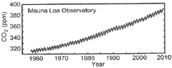
- Keeling curve, 식물의 광합성에 따른 계절적인 차이
- Keeling curve, 기온증가로 인한 빙하의 감소차이
- James curve, 폭우와 폭설에 따른 강수의 차이
- James curve, 태양복사에 의한 알베도의 차이
(정답률: 88%)
4. 다음 중 미국 북동부지역에서 운영 중인 배출권거래제도는?
- JVET
- RGGI
- EEX
- KETS
(정답률: 67%)
5. 기후변화협약의 주요 내용에 대한 설명으로 옳지 않은 것은?
- 기후변화 완화조치를 포함한 국가계획의 수립, 시행
- 온실가스 저감기술 및 공정의 개발
- 배출권 거래제도와 공동이행제도의 도입
- 선진국의 온실가스를 2020년까지 1990년 수준에서 평균 5.2% 의무 감축
(정답률: 74%)
6. 기후변화협약 당사국총회(COP)와 그 주요결과로 옳지 않은 것은?
- COP1(독일 베를린)에서는 2000년 이후 기간에 대한 선진국(부속서1 국가)의 감축목표 설정협상을 개시하는 '베를린 맨데이트'를 채택했다.
- COP2(스위스 제네바)에서는 선진국의 감축목표에 대한 법적 구속력을 부여하기로 합의했다.
- COP7(모로코 마라케시)에서는 교토의정서 운영규칙을 확정할 예정이었으나, 미국, 일본, 호주 등 Umbrella그룹과 유럽연합간의 입장차이로 합의가 결렬되었다.
- COP9(이태리 밀라노)에서는 CDM흡수원 관련 사업에 대한 기술적 규정, 기후변화 특별기금, 최빈국 기준 운영지침서 등을 합의했다.
(정답률: 66%)
7. 탄소세와 비교하였을 때 배출권거래제만의 장점으로 옳은 것은?
- 최소 저감비용으로 감축이 가능하고, 시행에 필요한 인프라는 거의 없다.
- 관리되는 업체에 안정적인 탄소가격 신호전달이 가능하다.
- 초기부터 재원조달이 가능하며, 탄소세 수준을 상향조절할수록 재원확보가 증가한다.
- 배출량 관리가 용이하다.
(정답률: 74%)
8. 우리나라의 국가 배출권 할당계획(온실가스 배출권 거래제 제1차 계획기간 ＜2015년~2017년＞)에 대해 바르게 설명한 것은?
- 할당대상 온실가스는 CO2, CH4, N2O, HFCs, PFCs로 5종류다.
- 각 기업은 온실가스 감축비용에 따라 직접 감축활동을 하거나 시장에서 배출권을 매입할 수 있다.
- 배출권 거래제 주무관청은 산업통상자원부이다.
- 계획기간 4년 전부터 3년간 온실가스 배출량 연평균 총량이 업체기준으로 25000 톤 CO2-eq 이상인 업체는 할당대상업체다.
(정답률: 84%)
9. 다음 중 지구온난화지수가 큰 순서부터 작은 순서대로 옳게 나열된 것은?
- CH ＞ CO2 ＞ HFCs ＞ N2O
- SF6 ＞ PFCs ＞ CH4＞ CO2
- HFCs ＞ SF6 ＞ N2O ＞ CO2
- PFCs ＞ CH4＞ N2O ＞ CO2
(정답률: 93%)
10. 기후변화에 대한 국제기구의 논의과정에 대한 설명으로 옳지 않은 것은?
- 국제사회가 기후변화문제를 환경문제로 처음 논의하기 시작한 것은 1972년 스톡홀름에서 개최된 인간환경회의(UN Conference on the Human Environment)로 볼 수 있다.
- WMO(세계기상기구)와 UNEP는 1988년 공동으로 IPCC(기후변화 정부간 패널)을 설립하고 지구온난화 문제에 각국 정부의 연구 및 대응역량을 결집하였다.
- IPCC는 1990년 제2차 세계기구회의에서 제1차 기후변화보고서를 발표하고 여기에서 기후변화문제를 다루기 위한 국제협약이나 규범의 제정을 권고하였다.
- IPCC는 1990년 제2차 세계기후회의에서 국제협약이나 규범의 권고에 따라 1999년 브라질 리우에서 개최된 유엔환경개발회의(UNCED)에서 기후변화협약(UNFCCC)을 체결하고 선진국의 온실가스 감축목표를 명확히 합의하였다.
(정답률: 73%)
11. UNFCCC의 규제대상 직접온실가스에 해당되지 않는 것은?
- N2O
- H2O
- PFCs
- HFCs
(정답률: 97%)
12. 기후변화의 영향인자로 가장 거리가 먼 것은?
- 태양활동의 변화, 대양에서의 환류작용
- 이산화탄소의 시비효과, 산림탄소의 변화
- 지구대기 구성 미생물의 활동주기 변화, 인구이동
- 황산에어로졸과 먼지, 화학적 반응과 대기의 산화상태
(정답률: 76%)
13. 평균 온도가 15℃인 지구표면을 완전 흑체(ε=1라고 가정할 때 방출되는 최대 복사량은?(단, 스테판-볼츠만 상수는 5.67x10-8Watt/m2K4이다.)
- 315Watt/m2K4
- 390Watt/m2K4
- 445Watt/m2K4
- 495Watt/m2K4
(정답률: 63%)
14. 1999년~2008년까지 최근 10년간 우리나라 안면도에서 관측된 이산화탄소의 농도경향에 관한 설명으로 옳지 않은 것은?
- 계절별로 진폭은 다르지만 뚜렷한 일변동 특성을 지닌다.
- 월평균 이산화탄소의 최대값과 최소값은 각각 4월과 8월에 나타났다.
- 일변동 최저농도가 나타나는 시간은 계절별로 차이가 있으나, 15~17시 사이에 나타났다.
- 이산화탄소의 일변동폭은 겨울에 약 10ppm정도로 가장 크고, 여름에 약 3ppm정도로 가장 작게 나타났다.
(정답률: 46%)
15. ipcc 제4차 보고서에 나타난 1961년 이후 매년 해수면 상승의 정도는?
- 0.8mm
- 1.8mm
- 3.8mm
- 5.8mm
(정답률: 58%)
16. 다음은 어떤 기체에 관한 설명인가?
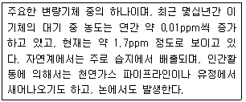
- 이산화탄소
- 메탄
- 오존
- 아산화질소
(정답률: 97%)
17. 기후변화의 영향을 각 부문별 기후변화에 대한 취약성으로 평가함에 있어서, 취약성 평가 기준이 아닌 것은?
- 리스크평가(Risk)
- 민감성(Sensitivity)
- 노출(Exposure)
- 적응(Adaptation)
(정답률: 52%)
18. 기후변화에 대한 정부간 패널(IPCC)의 실행 그룹에 대한 설명으로 옳지 않은 것은?
- 제1실행그룹은 기후시스템과 기후변화에 대한 과학적 이해를 다루는 그룹이다.
- 제2실행그룹은 기후변화의 영향평가와 적응 및 취약성 평가를 다루는 그룹이다.
- 제3실행그룹은 온실가스 배출량 완화와 사회경제적비용 및 편의분석 등 정책을 다루는 그룹이다.
- 특별대책반(TF)은 기후변화로 인한 재해지역에서 온실가스 및 에어로졸, 방사성물질, 프로세스 및 모델링을 통해 폭넓은 과학적 평가를 행하는 그룹이다.
(정답률: 92%)
19. 다음은 어떤 온실가스 인벤토리 가이드라인에 대한 명인가?
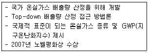
- IPCC
- ISO 14064-1
- GHG protocol
- EU-ETS GL
(정답률: 92%)
20. 배출량 산정 기본식에 대한 설명으로 옳지 않은 것은?
- GWP는 지구온난화지수로, CO2 1kg 대비 Non CO21kg의 온실가스 기여도를 말한다.
- 배출계수는 단위 활동자료 당 발생하는 온실가스 배출량을 나타낸다.
- GWP 100년을 기준으로 할 때 지구온난화 지수가 가장 높은 물질은 PFCs로 23,900이다.(IPCC제 2차보고서 기준)
- 고정연소의 배출량 산정방법론의 매개변수는 활동자료, 열량계수, 배출계수, 산화계수이다.
(정답률: 90%)
2과목: 온실가스 배출의 이해
21. 고정연소시설에 사용하는 기체연료 중 발전소, 산업공정의 스팀과 열생산, 가정이나 상업용 난방 등에 주로 쓰이는 천연가스의 일반적인 주성분은?
- 메탄
- 부탄
- 프로판
- 에탄
(정답률: 91%)
22. 온실가스ㆍ에너지 목표관리 운영 등에 관한 지침상 유리 생산 공정 중 융해 공정에서 CO2를 배출하는 주요 원료와 가장 거리가 먼 것은?
- 생석회
- 소다회
- 백운석
- 석회석
(정답률: 50%)
23. 온실가스ㆍ에너지 목표관리 운영 등에 관한 지침상 원료별 사용 비율에 따른 전 세계카프로락탐 생산능력이 큰 순서부터 작은 순서로 옳게 나열된 것은?
- 페놀 ＞ 톨루엔 ＞ 싸이클로헥산
- 톨루엔 ＞ 싸이클로헥산 ＞ 페놀
- 싸이클로헥산 ＞ 페놀 ＞ 톨루엔
- 페놀 ＞ 싸이클로헥산 ＞ 톨루엔
(정답률: 50%)
24. 온실가스ㆍ에너지 목표관리 운영 등에 관한 지침상 아연생산 공정과 거리가 먼 것은?
- 질산제조공정
- 정제공정
- 제련공정
- 소결공정
(정답률: 79%)
25. 온실가스ㆍ에너지 목표관리 운영 등에 관한 지침상 철강생산 공정의 보고대상 배출시설 중 “제선로에서 만들어진 선철중의 불순물 제거, 탈탄처리, 합금원소 첨가 등 정련작업을 하여 소정 품질의 강재를 생산하는데 사용되는 로”에 해당하는 것은?
- 용선로
- 코크스로
- 소결로
- 평로
(정답률: 46%)
26. 온실가스ㆍ에너지 목표관리 운영 등에 관한 지침상 고형 폐기물의 생물학적 처리의 보고대상 배출시설과 거리가 먼 것은?
- 퇴비화시설
- 고도처리시설
- 부숙토 생산시설
- 혐기성 분해시설
(정답률: 76%)
27. 2006 IPCC 국가 인벤토리 작성을 위한 가이드라인 기준에 따른 “생석회 생산량 당 CO2 배출계수(tCO2/t-생산량)”로 옳은 것은?
- 0.600
- 0.650
- 0.700
- 0.750
(정답률: 47%)
28. 온실가스ㆍ에너지 목표관리 운영 등에 관한 지침상 석탄 채굴 및 처리 활동에서의 탈루성 보고대상 온실가스로만 모두 옳게 나열한 것은?
- CO2
- CH4
- N2O, CO2, CH4
- CH4, N2O
(정답률: 56%)
29. 온실가스ㆍ에너지 목표관리 운영 등에 관한 지침상 철강생산 시 고급특수강이나 주물을 주조하는데 주로 사용하는 로는?
- 전기아크로
- 전로
- 유도로
- 고로
(정답률: 41%)
30. 온실가스ㆍ에너지 목표관리 운영 등에 관한 지침상 이동연소 선박부문의 배출량을 Tier 2, 3 수준으로 산정 시 적용하는 활동자료로 거리가 먼 것은?
- 연료 종류
- 선박 종류
- 엔진 종류별 연료사용량
- 엔진 부하율
(정답률: 63%)
31. 온실가스ㆍ에너지 목표관리 운영 등에 관한 지침상 시멘트 생산의 배출활동에 관한 설명으로 옳은 것은?
- 시멘트 공정에서의 온실가스 배출원은 클링커의 제조공정인 소성 공정에서 탄산칼륨의 산화 반응에 의하여 이산화탄소가 배출된다.
- 시멘트 공정에서의 CO2 배출특성은 주원료인 석회석과 함께 점토 등 부원료의 사용량에 의한 영향이 소성시설(kiln)의 생석회 생성량과 연료사용량 및 폐기물 소각량에 의하여 받는 영향보다 크다.
- 연료 중 목재와 같은 바이오매스 재활용 연료의 경우 배출량 산정에서 제외하여야 하나 합성수지 및 폐타이어 등 폐연료의 경우는 배출량 산정 시 포함되어야 한다.
- CKD(소성로에서 발생되는 비산먼지)는 소성공정의 회수시스템에 의해 다량 회수되어 소성공정에 재사용되므로, 회수되지 못한 CKD 내 탄산염 성분은 탈탄산 반응에 포함되지 않으므로 보정이 필요 없다.
(정답률: 66%)
32. 온실가스ㆍ에너지 목표관리 운영 등에 관한 지침상 하ㆍ 폐수 처리 및 배출의 보고대상 배출시설에 해당하지 않는 것은?
- 가축분뇨공공처리시설
- 공공하수처리시설
- 분뇨처리시설
- 부숙토처리시설
(정답률: 76%)
33. 온실가스ㆍ에너지 목표관리 운영 등에 관한 지침상 철강생산에서 발생되는 공정 부생 가스가 아닌 것은?
- 코크스오븐 가스(COG)
- 카본클랙 가스(CBG)
- 전로 가스(LDG)
- 고로 가스(BFG)
(정답률: 90%)
34. 온실가스ㆍ에너지 목표관리 운영 등에 관한 지침상 고정연소(고체연료) 온실가스 보고대상 배출시설 중 공정연소시설에 해당하지 않는 시설은?
- 배연탈황시설
- 건조시설
- 가열시설
- 용융ㆍ융해시설
(정답률: 66%)
35. 온실가스ㆍ에너지 목표관리 운영 등에 관한 지침상 촉매를 활용한 수증기 개질 방법으로 암모니아를 생산 시 거치는 7단계의 각 공정에 관한 설명으로 옳은 것은?
- 탈황공정 : 중질유분에 포함되어 있는 황을 촉매(Co-Mo계 촉매 또는 Co-Mo계 촉매와 ZnO 촉매)를 사용하여 제거한다.
- 공기 1차 개질 : 저온의 공기와 혼합된 납사 또는 천연가스를 철촉매를 이용하여 분해하여 NH 를 생산한다.
- 2차 개질 : 1차 개질에 이어 저온의 수증기가 주입되어 메탄을 생성한다.
- 일산화탄소의 전환(변성공정) : 개질공정을 거친 공정가스 중 CO2와 H2는 금속촉매(Fe-Ni계)가 포함된 스팀과 반응하여 CO를 생산한다.
(정답률: 36%)
36. 온실가스ㆍ에너지 목표관리 운영 등에 관한 지침상 연료전지의 배출활동 개요에 관한 설명으로 옳지 않은 것은?
- 연료전지는 외부에서 수소와 산소를 공급받아 수용액에서 전자를 교환하는 산화ㆍ환원 반응을 한다.
- 연료전지는 산화ㆍ환원 반응에서 생성된 화학적 에너지를 전기에너지로 변환시키는 발전장치이다.
- 연료전지는 물의 전기분해와는 다른 역반응으로 수소와 산소로부터 전기와 물을 생산한다.
- 수소를 생산하기 위하여 연료전지 후단에서 탄산과 물을 반응시키고 이 과정에서 CO2가 발생된다.
(정답률: 79%)
37. 온실가스ㆍ에너지 목표관리 운영 등에 관한 지침상 석유화학제품 생산 공정의 공정배출 보고대상 배출시설에 해당하지 않는 것은?
- EDC/VCM 반응시설
- 에틸렌옥사이드 반응시설
- 카본블랙 반응시설
- 하이드록실아민 반응시설
(정답률: 68%)
38. 온실가스ㆍ에너지 목표관리 운영 등에 관한 지침상 아디프산 생산을 위한 배출활동에 관한 설명으로 옳지 않은 것은?
- 아디프산 생산공정 중 온실가스(CH4 N2)가 발생하는 시설은 환원반응이 일어나는 반응공정이다.
- 일반적으로 KA Oil 혼합과정에서 공정 중 질소가 고농도로 존재함에 따라 아산화질소(N2)가 발생하게 되는 가능성이 높다.
- 아디프산은 합성섬유, 코팅, 플라스틱, 우레탄, 포말, 합성윤활유의 생산에 사용된다.
- 국내 생산되는 아디프산의 대부분은 나일론 6.6을 생산하는데 사용된다.
(정답률: 41%)
39. 온실가스ㆍ에너지 목표관리 운영 등에 관한 지침상 고형폐기물 매립을 위한 관리형 매립시설의 주요시설과 가장 거리가 먼 것은?
- 매립가스처리시설
- 우수집배수시설
- 침출수처리시설
- 콘크리트차단벽시설
(정답률: 75%)
40. 온실가스ㆍ에너지 목표관리 운영 등에 관한 지침상 고형폐기물의 생물학적 처리유형 중 혐기성 소화과정에서 주로 발생되는 대표적인 온실가스는?
- 일산화탄소
- 아산화질소
- 육불화황
- 메탄
(정답률: 91%)
3과목: 온실가스 산정과 데이터 품질관리
41. 온실가스ㆍ에너지 목표관리 운영 등에 관한 지침상 관리업체가 자체적으로 설치한 계량기이나, 주기적인 정도검사를 실시하지 않는 측정기기를 표시하는 기호는?
(정답률: 76%)
42. 사업장 고유 배출계수를 개발하여 활용하려 할 경우, 시료 채취 및 분석에 있어서 최소 분석 주기기준으로 옳지 않은 것은?
- 고체 폐기물연료(원소함량, 발열량, 수분, 회(Ash) 함량) : 분기 1회 또는 폐기물 연료매 5천 톤 입하 시(더욱 짧은 주기로 분석한다)
- 탄산염원료(광석 중 탄산염 성분, 원소함량 등) : 분기 1회 또는 매 5천톤 입하 시(더욱 짧은 주기로 분석한다)
- 생산물(원소함량 등) : 월 1회
- 기체연료 중 공정부생가스(가스성분, 발열량, 밀도 등) : 월 1회
(정답률: 47%)
43. 온실가스ㆍ에너지 목표관리 운영 등에 관한 지침상 관리업체인 L시멘트사 $4 Kiln은 연간 80000톤의 클링커를 생산하고 있고, 그 과정에서 시멘트킬른먼지(CKD)가 500톤 발생하나, L사는 백필터(Bag Filter)를 활용하여 CKD를 전량 회수하여 다시 Kiln에 투입한다고 가정할 때, Tier 1을 이용한 온실가스 배출량(tCO2/y)은? (단, 클링커생산량 당 CO2배출계수는 0.51tCO2/t-클링커, 투입원료 중 기타 탄소성분에 기인하는 CO2 출계수는 0.01tCO2/t-클링커)
- 40800.000
- 40880.000
- 41600.000
- 41860.000
(정답률: 31%)
44. 온실가스ㆍ에너지 목표관리 운영 등에 관한 지침상 고정연소 배출량 산정시 산화계수에 관한 설명으로 옳지 않은 것은?
- 고체연료, 기체연료, 액체연료 모두 Tier 1의 경우 1.0을 적용한다.
- 고체연료 중 발전부문 Tier 2의 경우 0.98을 적용한다.
- 액체연료 Tier 2의 경우 0.99를 적용한다.
- 기체연료 Tier 2의 경우 0.995를 적용한다.
(정답률: 75%)
45. 온실가스ㆍ에너지 목표관리 운영 등에 관한 지침상 외부에서 공급된 열(스팀)의 사용에 대한 온실가스 배출량 산정방법에 관한 설명으로 옳지 않은 것은?
- 열(스팀) 사용으로 인해 발생하는 배출량은 열(스팀) 공급자로부터 간접배출계수를 제공받아 활용한다.
- 외부에서 공급된 열(스팀)사용으로 인해 발생하는 간접적 온실가스 배출은 관리업체의 온실가스 배출량에 포함되지 않는다.
- 관리업체가 소유 및 통제하는 설비와 사업활동에 의한 열(스팀)사용으로 인해 발생하는 간접적 온실가스 배출은 연료연소, 원료사용 등으로 인한 직접적 온실가스 배출과 함께 관리업체의 온실가스 배출량에 포함되어야 한다.
- 열(스팀)을 생산하여 외부로 공급하는 업체가 자체적으로 열(스팀)배출계수 및 관련근거를 제공할 수 없는 경우에는 센터가 확인하여 지침에 수록된 열(스팀)배출계수 등을 활용할 수 있다.
(정답률: 70%)
46. 온실가스ㆍ에너지 목표관리제 운영을 위한 검증지침상 온실가스 배출량 등의 검증절차 중 아래의 ⓐ에 들어갈 검증절차로 옳은 것은?
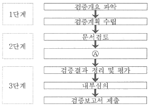
- 검증범위 확인
- 오류의 평가
- 현장검증
- 중요성 평가
(정답률: 85%)
47. 온실가스ㆍ에너지 목표관리 운영 등에 관한 지침상 온실가스 측정 불확도 산정절차를 4단계로 구분할 때, 다음 중 2단계에 해당하는 것은?
- 매개변수 분류 및 검토, 불확도 평가 대상 파악
- 배출활동의 활동자료, 배출계수, 기타 매개변수에 대한 합성 불확도 계산
- 개별시설 배출량의 불확도를 합산하여 사업장 총 배출량 불확도를 계산
- 측정횟수에 따른 확률 분포 값 결정
(정답률: 31%)
48. 다음은 온실가스 배출권 거래제의 배출량 보고 및 인증에 관한 지침상 모니터링 계획의 변경사항이다. ( ) 안에 가장 알맞은 것은?
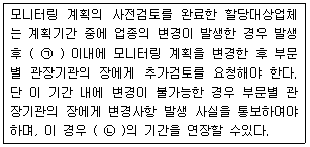
- ㉠ 30일, ㉡ 10일
- ㉠ 30일, ㉡ 7일
- ㉠ 14일, ㉡ 10일
- ㉠ 14일, ㉡ 7일
(정답률: 36%)
49. 온실가스ㆍ에너지 목표관리 운영 등에 관한 지침상 코크스로를 운영하고 있는 관리업체 A에서 석탄 15만톤을 사용하여 코크스 10만톤을 생산하였다. 온실가스 배출량을 산정할 경우 발생된 온실가스양은 몇tCO2-eq인가? (단, 공정배출계수는 CO2: 0.56 tCO2/t코크스, CH4: 0.1 gCH4/t코크스)
- 56000.210
- 84000.320
- 140000.530
- 266000.000
(정답률: 61%)
50. 온실가스ㆍ에너지 목표관리 운영 등에 관한 지침상 불확도 산정절차 및 방법에 관한 설명으로 옳지 않은 것은?
- 확장불확도는 표준불확도에 신뢰구간을 특정짓는 포함인자를 곱하여 결정하는 것으로 포함인자 값은 관측값이 어떤 신뢰구간을 택하느냐에 따라 달라진다.
- 상대불확도는 불확도를 비교 가능한 값으로 환산하기 위해 불확도를 최적 추정값(평균)으로 나누고 100을 곱하여 백분율로 표현하고 있다.
- 일반적으로 여러 배출원의 불확도를 비교하기 위해 상대불확도를 많이 사용하고 있다.
- 일반적으로 온실가스 배출량 불확도 산정에서는 특정 확률분포(t-분포)에서 99.45% 신뢰수준의 포함인자를 합성불확도에 곱한 확장불확도를 사용하고 있다.
(정답률: 72%)
51. 온실가스ㆍ에너지 목표관리 운영 등에 관한 지침상 오존파괴 물질의 대체물질 사용 시 폐쇄형 기포(closed-cell) 발포제에 의한 온실가스 배출량 산정에 요구되는 매개변수로만 옳게 나열된 것은?
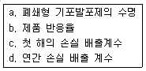
- b, c, d
- a, b, d
- a, c, d
- a, b, c
(정답률: 50%)
52. 온실가스ㆍ에너지 목표관리 운영 등에 관한 지침상 고체연료를 고정연소하는 배출시설이 Tier 2를 적용받을 경우 매개변수별 관리기준에 관한 설명으로 옳지 않은 것은?
- 활동자료는 사업자 또는 연료공급자에 의해 측정된 측정불확도 ±2.5% 이내의 연료사용량 자료를 활용한다.
- 열량계수는 국가 고유 발열량 값을 사용한다.
- 배출계수는 국가 고유 배출계수를 사용한다.
- 산화계수는 발전부문 0.99, 기타부문 0.98을 적용한다.
(정답률: 82%)
53. 온실가스ㆍ에너지 목표관리 운영 등에 관한 지침상 연속측정법에 따른 배출량 산정방법 및 기준으로 거리가 먼 것은?
- 해당배출시설의 산정등급은 Tier 4로 규정한다.
- 측정에 기반한 배출량 산정 일반식은 30분 측정(gCO230분)으로 한다.
- 측정자료 중 유량의 소수점 이하는 버림처리 한다.
- 결측자료는 무효로 처리되며 대체자료를 생성할 수 없다.
(정답률: 66%)
54. 온실가스ㆍ에너지 목표관리 운영 등에 관한 지침상 연료전지 공정에서 원료로 LNG 30000t, 바이오가스(메탄) 6000t을 사용할 때 CO2배출량(tCO2은? (단, 연료전지 국가 고유배출계수 및 IPCC 가이드라인 기본 배출계수는 다음 표를 이용)
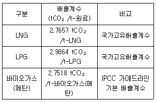
- 92295.213
- 106102.800
- 99481.800
- 98693.812
(정답률: 77%)
55. 온실가스ㆍ에너지 목표관리 운영 등에 관한 지침상 Tier 1A 방법에 따른 아연 생산공정의 보고대상 온실가스 배출량(tCO2)은?(단, 생산된 아연의 양 2000톤, 아연생산량당 기본배출계수 1.72tCO2/t, 건식야금법에 대한 아연생산량당 배출계수 0.43tCO2/t, Waelz Kiln과정에 대한 아연생산량당 배출계수 3.66tCO2/t)
- 860
- 3440
- 7320
- 11620
(정답률: 60%)
56. 온실가스ㆍ에너지 목표관리 운영 등에 관한 지침상 목표관리 대상업체에서 근사법에 의한 모니터링방법을 적용할 경우에 관한 설명으로 옳지 않은 것은?
- 관리업체는 근사법을 사용할 수 밖에 없는 합당한 이유 등을 모니터링 계획에 포함하여야 한다.
- 관리업체는 배출시설단위로 측정기기의 신규설치 및 정도검사/관리 일정 등을 모니터링 계획에 포함하여야 한다.
- 이동연소배출원(사업장에서 개별 차량별로 온실가스 배출량을 산정하는 경우를 의미한다)에는 근사법에 의한 모니터링을 적용할 수 없다.
- 식당 LPG, 비상발전기에는 근사법에 의한 모니터링을 적용할 수 있다.
(정답률: 75%)
57. A씨는 하루 30L의 휘발유를 소모한다. 이로인해 매일 A씨가 지구온난화에 기여하는 이산화탄소의 하루 동안의 배출총량(kgCO2/일)은?(단, 순발열량은 30,3MJ/L(Tier 2), 차량용 휘발유의 CO2배출계수는 69300kg/TJ)
- 123
- 92
- 85
- 63
(정답률: 72%)
58. 온실가스ㆍ에너지 목표관리 운영 등에 관한 지침상 모니터링 유형 중 A-3 유형의 활동자료를 결정하는 식으로 옳은 것은?
- 활동자료 = 신규구매량 + (회계년도 시작일 재고량 + 차기년도 시작일 재고량) - 기타용도(판매ㆍ이송 등) 사용량
- 활동자료 = 신규구매량 + (회계년도 시작일 재고량 - 차기년도 시작일 재고량) - 기타용도(판매ㆍ이송 등) 사용량
- 활동자료 = 신규구매량 + (회계년도 종료일 재고량 - 차기년도 시작일 재고량) - 기타용도(판매ㆍ이송 등) 사용량
- 활동자료 = 신규구매량 + (회계년도 종료일 재고량 + 차기년도 시작일 재고량) - 기타용도(판매ㆍ이송 등) 사용량
(정답률: 50%)
59. 온실가스ㆍ에너지 목표관리 운영 등에 관한 지침상 A업체에서는 전기로에서 흩뿌림 충전방식(Sprinkle charging)으로 600℃조건에서 합금철이 연간 3700t이 생산되고 있다. 아랫단서 조항에 의거 Tier 1에 따른 연간 온실가스 배출량(tCO2-eq)은?(단, 생산된 합금철은 65% Si로 CO2 배출계수는 3.6 tCO2/t-합금철이며, CH4배출계수는 1.0 kgCH4/t-합금철이다.)
- 13397.700
- 91020.000
- 8708.5⑤
- 59163.000
(정답률: 50%)
60. 온실가스ㆍ에너지 목표관리 운영 등에 관한 지침상 A사업장에서 운행하고 있는 차량은 트럭(경유) 5대, 임원용 승용차(휘발유) 3대, 출퇴근 버스(경유) 1대로 구성되어 있다. 이 때 차량의 연료사용량(L)은? (단, 차량관련 자료는 아래 표 기준)
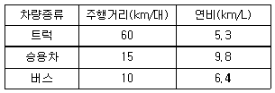
- 42.76
- 52.76
- 62.76
- 72.76
(정답률: 80%)
4과목: 온실가스 감축관리
61. CDM사업 등록절차별 단계 수행 및 수행내용과 설명의 연결로 옳지 않은 것은?
- 타당성 확인(Validation) - 사업에 적합한 DOE 선정, DOE에 타당성 확인 시 필요한 자료 제공, DOE 현장심사 준비
- CDM 사업등록 - 자료송부, CDM 사업화 방안 도출, DOE를 통한 UNFCCC에 발급 요청
- 운전 및 모니터링, 모니터링보고서 작성- 사업운전 데이터 수집, 실제 배출감축량의 산정, 배출감축량 확보에 대한 보고서 작성
- 검측(Verification) - 사업에 적합한 DOE선정, DOE 검증 시 필요한 자료 제공, DOE 지적사항에 대한 해결방안 도출
(정답률: 50%)
62. A업체는 2016년도에 온실가스ㆍ에너지 목표관리제의 관리업체로 최초 지정되었다. 이 경우 동 업체의 목표관리를 위한 기준연도 선정기준으로 옳은 것은?
- 2015년도
- 2013 ~ 2015년도
- 2011 ~ 2015년도
- 2006 ~ 2015년도
(정답률: 91%)
63. A사의 온실가스 감축방법에 관한 내용 중 탄소상쇄로 옳은 것은?
- 외부로부터 탄소배출권 구매
- 운전조건을 개선시켜 온실가스 배출량 감축
- 배출되는 온실가스를 재활용 또는 다른 목적으로 활용하여 온실가스 배출량 감축
- 배출되는 온실가스를 처리하여 대기로의 온실가스 배출량 감축
(정답률: 84%)
64. 화학산업에서 우선적으로 추진해야 할 온실가스 감축 수단은 에너지 효율을 높이고 화학연료 사용을 최소화 하는 것이다. 다음 중 에너지 효율 개선을 위해 적용할 수 있는 “공정개선”과 가장 거리가 먼 것은?
- 에너지 효율 제고를 위해 제조법의 전환 및 공정 개발
- 설비 및 기기효율의 개선
- 배출 에너지의 회수
- 배출량 원단위 지수 개선
(정답률: 75%)
65. 온실가스의 직접감축방법 중 제3차 방법론인 “공정개선”의 설명으로 가장 적합한 내용은?
- 에너지 효율 향상을 위한 운전조건 개선 등을 통한 온실가스 배출의 감축 또는 근절
- 온실가스 배출이 높은 공정에 대한 배출이 적거나 배출이 없는 대체공정
- GWP(지구온난화지수)가 높은 온실가스를 낮은 온실가스로 전환 또는 온실가스가 아닌물질로 전환
- 공정에서 사용되는 온실가스 배출을 유발하는 물질을 GWP가 낮은 물질 또는 온실가스 배출이 없는 물질로 대체
(정답률: 57%)
66. 다음은 CO 포집기술에 관한 내용이다. ( )안에 옳은 내용은?
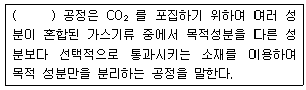
- 막분리
- 흡착
- 저온냉각분리
- 건식 세정
(정답률: 77%)
67. 온실가스 감축방법 중 직접 감축방법과 거리가 먼 것은?
- 대체물질 및 대체공정
- 외부 감축사업 시행
- 공정개선
- 온실가스 활용
(정답률: 78%)
68. 외부사업 타당성 평가 및 감축량 인증에 관한 지침에서 온실가스 감축 승인대상에 관한 설명으로 옳지 않은 것은?
- 외부사업 사업자가 할당 대상업체의 조직경계 외부에서 자발적으로 시행하는 사업에 한한다.
- 1차 계획기간과 2차 계획기간에는 외국에서 시행된 외부사업에서 발생한 외부사업 온실가스 감축량은 등록하거나 그에 상응하는 배출권으로 전환하여 줄 것을 신청할 수 있다.
- 외부감축실적이 타 법령에 의한 의무적 사항을 이행하는 과정에서 발생한 것이 아니어야 한다.
- 일반적인 경영여건에서 실시할 수 있는 행동을 넘어서는 추가적인 행동 및 조치에 따른 감축이 발생되어야 한다.
(정답률: 61%)
69. CDM사업 추진 시 사업이 발생하는 해당 국가의 정부에서 CDM사업에 대한 승인을 해주기 위해 지정한 기구의 영문 약어 이름은 무엇인가?
- PDD
- DNA
- MRV
- AAU
(정답률: 87%)
70. 부문별 관장기관은 외부사업 사업자의 외부사업에 대한 타당성 평가를 할 때 추가성 입증의 적절성을 고려하게 되는데, 여기서 해당되는 추가성 평가항목으로만 옳게 연결된 것은? (단, 외부사업 타당성 평가 및 감축량 인증에 관한 지침을 기준, 그 밖의 경우는 고려하지 않는다.)
- 환경적 추가성, 논리적 추가성
- 법적ㆍ제도적 추가성, 경제적 추가성
- 기술적 추가성, 논리적 추가성
- 경제적 추가성, 행위적 추가성
(정답률: 57%)
71. 시간당 1MW 규모의 풍력발전소를 건설하여 전력을 생산하는 사업을 CDM사업으로 추진하려고 한다. 풍력발전의 이용률은 15%이고, 매일 24시간으로 연간 연속가동되며, 생산된 전력은 모두 전력계통으로 공급된다고 가정할 때, 이 사업에 의한 연간 온실가스 감축량은? (단, 전력계통의 온실가스 배출계수는 0.8톤 CO /MWh이고, 풍력발전소 자체 전기사용량과 1톤 이하 온실가스 감축량은 무시함)
- 1002 CO2톤/년
- 1⑤1 CO2톤/년
- 1078 CO2톤/년
- 1098 CO2톤/년
(정답률: 57%)
72. 다음 중 신재생에너지기술의 하나인 태양광발전의 장ㆍ단점에 관한 설명으로 옳지 않은 것은?
- 고갈에 대한 제한이 없으며, 필요한 장소에서 필요한 발전이 가능하다.
- 유지 보수가 용이한 편이며, 무인화가 가능하며, 설비의 긴 수명(20년 이상) 등의 장점을 갖는다.
- 에너지 밀도가 높아 적은 수의 태양전지를 사용하여도 무방하다.
- 시스템 비용이 고가이므로 초기투자비와 발전단가가 높은 단점을 가지고 있다.
(정답률: 74%)
73. 공사시행 시 장비투입에 따른 경유를 사용할 경우 온실가스 총 배출량(tCO2-eq)을 구하면 약 얼마인가?
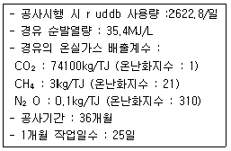
- 6.2
- 620
- 6200
- 6200000
(정답률: 59%)
74. 온실가스 배출권거래제의 조기감축실적 인정기준으로 옳지 않는 것은?
- 조기감축실적은 국내ㆍ외에서 실시한 행동에 의한 감축분에 대하여 그 실적을 인정한다.
- 조기감축실적은 할당대상업체의 조직경계 안에서 발생한 것에 한하여 그 실적을 인정한다.
- 조기감축실적은 할당대상업체 단위에서의 감축분 또는 사업단위에서의 감축분에 대하여인정할 수 있다.
- 조기감축실적으로 인정되기 위해서는 조기행동으로 인한 감축이 실제적이고 지속적이어야 하며, 정량화되어야 하고 검증 가능하여야 한다.
(정답률: 84%)
75. 온실가스ㆍ에너지 목표관리 운영 등에 관한 지침상 매년 조기감축 실적으로 인정할 수있는 전체 총량은 전체 관리업체 배출허용량의 몇%인가?
- 전체 관리업체 배출허용량의 1%
- 전체 관리업체 배출허용량의 5%
- 전체 관리업체 배출허용량의 10%
- 전체 관리업체 배출허용량의 20%
(정답률: 91%)
76. 아래의 그림은 온실가스 감축활동을 유도하는 정책수단이다. 이 제도의 이름은 무엇인가?
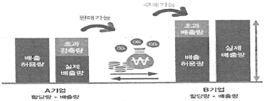
- 공동이행(JI)
- 목표관리제
- 배출권거래제(ET)
- 청정기술개발(CDM)
(정답률: 86%)
77. CDM 방법론은 감축활동을 통해 유발되는 온실가스 감축량을 정량적으로 제시할 수 있도록 베이스라인 수립 및 감축량 산정에 대한 논리전개 체계를 '베이스라인 방법론'과 프로젝트 활동의 실행에 따른 감축성과를 모니터링 할 수 있는 구체적인 방법을 담은 '모니터링 방법론'으로 구성하고 있는데, 다음 보기 중 '베이스라인 방법론'의 내용과 거리가 먼 것은?
- 베이스라인 시나리오 수립절차
- 추가성 결정방법
- 감축량을 정성적으로 판단할 수 있는 논리
- 감축량을 정량적으로 계산할 수 있는 절차
(정답률: 59%)
78. 연료전치(Fuel Cell)의 특징과 거리가 먼 것은?
- 회전부위가 없어 소음이 없는 반면, 기존 화력발전과 같이 다량의 냉각수가 필요하다.
- 도심 부근에 설치가 가능하여 송ㆍ배전 설비가 적게 소요되고, 전력 손실이 적다.
- 천연가스, 메탄올, 석탄가스 등 다양한 연료의 사용이 가능하다.
- 부하 변동에 따라 신속히 대응할 수 있으며, 설치형태에 따라서 현지 설치형 등 다양한 용도로 사용이 가능하다.
(정답률: 72%)
79. 연소공정의 아산화질소(N2O) 처리기술에 대한 설명으로 옳지 않은 것은?
- 유동층연소에서 발생하는 아산화질소를 저감시키기 위해서는 유동층의 온도를 높여서 아산화질소의 열분해를 유도하는 방법이 있다.
- 생성된 아산화질소의 분해기술은 고온처리와 저온처리로 나눌 수 잇는데, 고온처리에는 기상열분해와 매체입자에 의한 접촉분해방법이 있고, 저온처리는 SCR 혹은 SNCR 등 촉매 분해방법이 있다.
- 유동층연소에서 배출되는 아산화질소를 촉매분해, N2O-SCR 등의 방법으로 처리할 수있다.
- 폐기물 소각공정에서 석회석을 사용한 아산화질소 처리기술이 가장 보편적으로 적용되고 있다.
(정답률: 67%)
80. CCS(Carbon Capture Storage)에 관한 설명으로 거리가 먼 것은?
- CCS기술은 발전소 및 각종 산업에서 발생하는 CO2를 대기로 배출시키기 전에 고농도로 포집ㆍ압축ㆍ수송하여 안전하게 저장하는 기술로 정의될 수 있다.
- CCS 중 포집은 배가스로부터 CO2만을 선택적으로 분리포집하는 기술을 의미한다.
- 포집은 세부기술에 따라, 연소 후 포집, 연소 전 포집, 순산소 연소포집기술로 구분할 수있다.
- CCS는 처리비용이 저렴하나, CO2제거효율은 낮아 소규모 사업장에서 다소 타당성이 있다.
(정답률: 80%)
5과목: 온실가스관련 법규
81. 온실가스 배출권의 할당 및 거래에 관한 법률에 따르면 배출권등록부의 관리ㆍ운영은 어디서 하는가?
- 국무총리실
- 주무관청
- 온실가스검증심사원
- 온실가스종합정보센터
(정답률: 24%)
82. 저탄소 녹색성장 기본법에서 사용하는 용어의 뜻으로 옳지 않은 것은?
- “녹색제품”이란 에너지ㆍ자원의 투입과 온실가스 및 오염물질의 발생을 최소화하는 제품을 말한다.
- “온실가스 배출”이란 사람의 활동에 수반하여 발생하는 온실가스를 대기 중에 배출ㆍ방출 또는 누출시키는 직접배출만을 말한다.
- “녹색생활”이란 기후변화의 심각성을 인식하고 일상생활에서 에너지를 절약하여 온실가스와 오염물질의 발생을 최소화하는 생활을 말한다.
- “저탄소”란 화석연료에 대한 의존도를 낮추고 청정에너지의 사용 및 보급을 확대하며 녹색기술 연구개발, 탄소흡수원 확충 등을 통하여 온실가스를 적정수준 이하로 줄이는 것을 말한다.
(정답률: 63%)
83. 저탄소 녹색성장 기본법에 따르면 관리업체는 설정한 에너지 절약 및 온실가스 감축목표를 준수하여야 하며, 그 실적을 대통령령으로 정하는 바에 따라 정부에 보고하여야 한다. 이때 보고를 하지 않거나 거짓으로 보고한 자에게 부과되는 과태료 기준은?
- 2백만원 이하의 과태료
- 1천만원 이하의 과태료
- 2천만원 이하의 과태료
- 5천만원 이하의 과태료
(정답률: 71%)
84. 온실가스ㆍ에너지 목표관리 운영 등에 관한 지침에 따라 관리업체가 연속측정방법을 사용하여 배출량 등르 산정ㆍ보고하고자 할 경우 해당 배출시설의 산정등급기준은?
- Tier 1
- Tier 2
- Tier 3
- Tier 4
(정답률: 81%)
85. 저탄소 녹색성장 기본법에 따라 정부가 범지구적인 온실가스 감축에 적극 대응하고 저탄소 녹색서장을 효율적ㆍ체계적으로 추진하기 위하여 중장기 및 단계별 설정해야 하는 목표와 가장 거리가 먼 것은?
- 에너지 자립 목표
- 에너지 절약 목표
- 에너지 이용효율 목표
- 탄소성적표지제도 보급 목표
(정답률: 61%)
86. 저탄소 녹색성장 기본법상 저탄소 녹색성장 실현을 위한 지방자치단체의 책무와 거리가 먼 것은?
- 각종 정책을 수립할 때 경제와 환경의 조화로운 발전 및 기후변화에 미치는 영향 등을 종합적으로 고려하여야 하며, 국제적인 기후변화대응 및 에너지ㆍ자원 개발협력에 능동적으로 참여하여야 한다.
- 지역주민에게 저탄소 녹색성장에 대한 교육과 홍보를 강화하여야 한다.
- 저탄소 녹색성장 대책을 수립ㆍ시행할 때 해당 지방자치단체의 지역적 특성과 여건을 고려하여야 한다.
- 관할구역 내의 사업자, 주민 및 민간단체의 저탄소 녹색성장을 위한 활동을 장려하기 위하여 정보제공, 재정지원 등 필요한 조치를 강구하여야 한다.
(정답률: 72%)
87. 저탄소 녹색성장 기본법 시행령에 따른 온실가스ㆍ에너지 목표관리의 원칙 및 역할에 대한 설명으로 가장 거리가 먼 것은?
- 환경부장관은 관리업체의 온실가스 감축 목표의 설정ㆍ관리 등에 관하여 총괄ㆍ조정기능을 수행한다.
- 환경부장관은 목표관리의 신뢰성을 높이기 위하여 필요한 경우에는 부문별 관장기관의 소관 사무에 대하여 종합적인 점검ㆍ평가를 할 수 있다.
- 환경부장관은 관리업체의 온실가스 감축 및 에너지 절약 목표 등의 이행실적, 명세서, 신뢰성 여부 등에 중대한 문제가 있다고 인정되는 경우 단독으로 관리업체에 실태조사를 실시하여야 한다.
- 부문별 곤장기관은 소관 부문별로 목표의 설정ㆍ관리 및 필요한 조치에 관한 사항을 관장하되, 관리업체의 목표가 국가 온실가스 감축목표의 세부 감축 목표에 부합하도록 하여야한다.
(정답률: 63%)
88. 저탄소 녹색성장 기본법 시행령상 부문별 관장기관은 소관 부문별 전년도 온실가스정보 및 통계를 작성하여 언제까지 온실가스 종합정보센터에 제출하여야 하는가?
- 매년 1월 31까지
- 매년 3월 31까지
- 매년 6월 30까지
- 매년 12월 31까지
(정답률: 40%)
89. 온실가스 배출권의 할당 및 거래에 관한 법률 시행령에 따르면 조기감축실적이 있는 할당대상업체가 조기감축실적을 인정받기위해 조기감축실적 인정신청서를 전자적 방식으로 주무관청에 제출해야 하는 시기는?
- 1차 계획기간의 1차 이행연도 시작 이후 6개월 이내
- 1차 계획기간의 2차 이행연도 시작 이후 6개월 이내
- 1차 계획기간의 1차 이행연도 시작 이후 8개월 이내
- 1차 계획기간의 2차 이행연도 시작 이후 8개월 이내
(정답률: 27%)
90. 온실가스ㆍ에너지 목표관리 운영 등에 관한 지침상 건물이 건축물 대장 또는 등기부에 각각 등재되어 있거나 소유지분을 달리하고 있는 경우에 건축물에 대한 특례기준으로 옳지 않은 것은?
- 건물의 소유구분이 지분형식으로 되어 있을 경우에는 최대 지분을 보유한 법인 등을 당해 건물의 소유자로 본다.
- 인접 또는 연접한 대지에 동일 법인이 여러 건물을 소유한 경우에는 한 건물로 본다.
- 에너지관리의 연계성이 있는 복수의 건물 등은 한 건물로 보며, 동일 부지 내 있거나 인접 또는 연접한 집합건물이 동일한 조직에 의해 에너지 공급ㆍ관리 또는 온실가스 관리 등을 받을 경우에도 한 건물로 간주한다.
- 동일 건물에 구분 소유자와 임차인에 있는 경우에는 각각의 건물로 본다.
(정답률: 76%)
91. 온실가스 배출권의 할당 및 거래에 관한 법률 시행령상 1차 계획기간에는 배출권의 전부를 무상으로 할당하고, 2차 계획기간에 할당대상업체별로 할당되는 배출권의 무상할당 비율로 옳은 것은?
- 100분의 80
- 100분의 87
- 100분의 90
- 100분의 97
(정답률: 71%)
92. 온실가스ㆍ에너지 목표관리 운영 등에 관한 지침상 주제별 역할분담 사항 중 환경부 장관의 담당업무와 거리가 먼 것은?
- 관리업체 지정에 대한 부문별 관장기관의 이의신청 재심사 결과 확인
- 검증기관의 지정ㆍ관리, 검증심사원 교육 및 양성
- 검증기관 3(Tier 3) 배출계수에 대한 검토와 관리업체에 대한 사용가능 여부 및 시정사항의 통보
- 목표관리에 관한 종합적인 기준과 지침의 제ㆍ개정 및 운영
(정답률: 38%)
93. 저탄소 녹색성장 기본법 시행령상 관리업체의 지정기준 등에 관한 설명으로 옳지 않은 것은?
- 부문별 관장기관은 대통령령으로 정하는 기준량 이상의 온실가스 배출업체 및 에너지 소비업체를 관리업체의 대상으로 선정하고, 그 관련자료를 첨부하여 매년 4월 30일까지 환경부장관에게 통보하여야 한다.
- 환경부장관은 관리업체 선정의 중복ㆍ누락, 규제의 적절성 등을 확인한 후 부문별 관장기관에게 통보하고, 통보를 받은 부문별 관장기관은 매년 6월 30일까지 관리업체를 지정하여 관보에 고시한다.
- 관리업체는 관리업체 지정에 이의가 잇는 경우 고시된 날부터 60일 이내에 부문별 관장기관에게 소명자료를 첨부하여
- 부문별 관장기관은 이의신청을 받았을 때에는 이에 관하여 재심사하고 환경부장관의 확인을 거쳐 이의신청을 받은 날부터 30일 이내에 그 결과를 관리업체에 통보하여야 한다.
(정답률: 60%)
94. 저탄소 녹색성장 기본법상 녹색성장위원회에 관한 설명으로 옳은 것은?
- 국가의 저탄소 녹색성장과 관련된 주요정책 및 계획과 그 이행에 관한 사항을 심의하기 위하여 환경부 소속으로 녹색성장위원회를 둔다.
- 위원회는 위원장 2명을 포함한 50명 이내의 위원으로 구성한다.
- 위원회는 사무를 처리하기 위하여 위원회에 간사위원 2명을 두며, 간사위원의 지명에 관한 사항은 환경부령으로 정한다.
- 위원의 임기는 2년으로 하되, 연임할 수 없다.
(정답률: 57%)
95. 저탄소 녹색성장 기본법 시행령상 온실가스 에너지 목표관리를 위한 부문별 관장기관 및 소관분야로 옳지 않은 것은?
- 산업통상자원부 : 산업ㆍ발전분야
- 농림축산식품부 : 농업ㆍ임업ㆍ축산ㆍ식품분야
- 국토교통부 : 건물ㆍ교통ㆍ해운ㆍ항만분야
- 환경부 : 폐기물분야
(정답률: 74%)
96. 저탄소 녹색성장 기본법상 기후변화대응정책 및 관련계획 수립을 위한 기본원칙과 가장 거리가 먼 것은?
- 석유ㆍ석탄 등 화석연료의 사용을 단계적으로 축소하고 에너지 자립도를 획기적으로 향상시킨다.
- 온실가스를 획기적으로 감축하기 위하여 정보통신ㆍ나노ㆍ생명 공학 등 첨단기술 및 융합 기술을 적극 개발하고 활용한다.
- 대규모 자연재해, 환경생태와 작물상황의 변화에 대비하는 등 기후변화로 인한 영향을 최소화하고 그 위험 및 재난으로부터 국민의 안전과 재산을 보호한다.
- 지구온난화에 따른 기후변화 문제의 심각성을 인식하고 국가적ㆍ국민적 역량을 모아 총체적으로 대응하고 범지구적 노력에 적극 참여한다.
(정답률: 32%)
97. 온실가스 배출권의 할당 및 거래에 관한 법률상 배출권 할당대상업체가 이행연도 종료일부터 6개월 이내에 종료된 이행년도의 배출권을 주무관청에 제출하지 않을 경우 벌칙 또는 과태료 기준은?
- 5백만원 이하의 과태료를 부과ㆍ징수한다.
- 1천만원 이하의 과태료를 부과ㆍ징수한다.
- 1년 이하의 징역 또는 3천만원 이하의 벌금에 처한다.
- 1년 이하의 징역 또는 5천만원 이하의 벌금에 처한다.
(정답률: 71%)
98. 온실가스 배출권의 할당 및 거래에 관한 법률에 따라 무상으로 할당된 배출권의 할당 취소사유로 거리가 먼 것은?
- 할당계획 변경으로 배출허용총량이 증가한 경우
- 할당대상업체가 전체시설을 폐쇄한 경우
- 할당대상업체가 정당한 사유 없이 시설가동 예정일부터 3개월 이내에 시설을 가동하지 아니한 경우
- 할당대상업체의 시설가동이 1년 이상 정지된 경우
(정답률: 66%)
99. 온실가스ㆍ에너지 목표관리 운영 등에 관한 지침상 관리업체가 온실가스 배출량 등의 산정결과를 서식에 따라 명세서를 작성하고 검증기관의 검증을 거쳐 전자적 방식으로 부문별 관장기관에 제출해야 하는 기한은?
- 매년 1월 31일까지
- 매년 2월 28일까지
- 매년 3월 31일까지
- 매년 12월 31일까지
(정답률: 80%)
100. 온실가스 배출권의 할당 및 거래에 관한 법률상 배출권 할당위원회의 구성기준으로 옳은 것은?
- 위원장 1명과 20명 이내의 위원
- 위원장 1명과 50명 이내의 위원
- 위원장 1명과 75명 이내의 위원
- 위원장 1명과 100명 이내의 위원
(정답률: 63%)